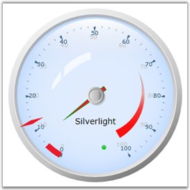

You can use the PointerSelectionBrush property to alter the pointer border color. The following code example illustrates this.
|
[XAML]
<syncfusion:CircularPointer PointerNeedleType="Marker" PointerSelectionBrush="Green" BorderBrush="#FF0000FF" BorderThickness="0" PointerLength="45" PointerWidth="7" Value="3" IncreamentKey="I" DecreamentKey="D" /> |

Figure 74: Circular Gauge Pointer Color set to "Green"